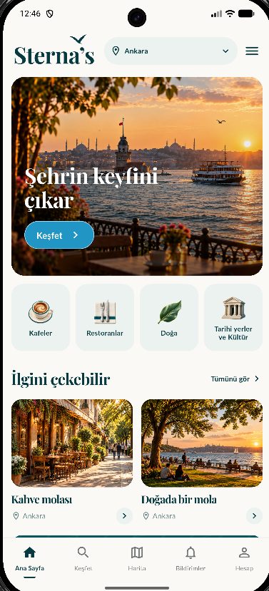
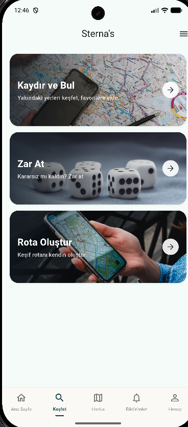
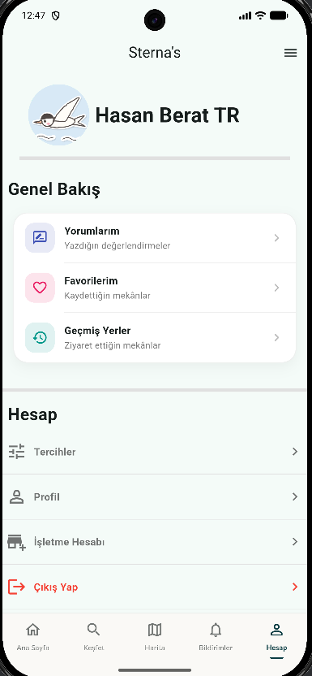

Kategorilerle keşfetBrowse by category
Kafeler, restoranlar, doğa, tarihi yerler ve kültür; seçtiğin şehre göre.Cafés, restaurants, nature, history and culture — for the city you pick.
Sterna's, Türkiye'deki şehirlerde restoran, kafe, doğa ve tarihi yerleri keşfetmeni sağlayan bir mobil uygulama. Nereye gideceğine karar vermek artık çok daha kolay. Sterna's is a mobile app for discovering restaurants, cafés, nature spots and historical places in Turkish cities. Deciding where to go just got a lot easier.

İster ne istediğini bil, ister karar veremeyenlerden ol; Sterna's sana uygun yolu sunar. Whether you know exactly what you want or can't decide, Sterna's has a way for you.
Kafeler, restoranlar, doğa, tarihi yerler ve kültür; seçtiğin şehre göre.Cafés, restaurants, nature, history and culture — for the city you pick.
Yakındaki mekânları kartlarla kaydır, beğendiklerini favorilerine ekle.Swipe through nearby places and save the ones you like.
Kararsız mı kaldın? Zarı at, senin için bir mekân seçelim.Can't decide? Roll the dice and we'll pick a place for you.
Yakındaki ve yüksek puanlı mekânları haritada gör, ara ve filtrele.See nearby and top-rated places on the map, search and filter.
Puan ver, deneyimini paylaş, işine yarayan yorumları beğen.Rate places, share your experience and like helpful reviews.
Bilmediğimiz bir yeri fotoğraflarıyla öner; onaylandığında sana haber verelim.Suggest a place we're missing, with photos — we'll notify you once it's approved.
Ziyaret ettiğin yerleri hatırlar, değerlendirmen için sana hatırlatır, beğenilerini ve bildirimlerini tek yerde toplar.It remembers where you've been, reminds you to review it, and keeps your likes and notifications in one place.


Anthropic'in Claude modelini Sterna's'a entegre ediyoruz. Amacımız yüzlerce yorumu okumadan doğru yeri bulabilmen.We're integrating Anthropic's Claude into Sterna's, so you can find the right place without reading hundreds of reviews.
Her mekânın yorumlarından kısa, dengeli bir özet: öne çıkanlar ve dikkat edilmesi gerekenler.A short, balanced summary of each place's reviews: highlights and things to watch out for.
Favorilerine, ziyaret geçmişine ve tercihlerine göre sana özel mekân önerileri.Place suggestions tailored to your favorites, visit history and preferences.
Yeni yer önerileri ve yorumlar yayınlanmadan önce uygunluk açısından otomatik ön denetimden geçer.New place suggestions and reviews are automatically pre-moderated before they go live.
Sterna's, Kasım 2025'te iki üniversite öğrencisinin projesi olarak başladı.Sterna's started in November 2025 as a project by two university students.
Kurucu Ortak · Yazılım GeliştiriciCo-founder · Software Developer
Kurucu Ortak · Yazılım GeliştiriciCo-founder · Software Developer
Görüş, öneri ve iş birlikleri için:For feedback, ideas and partnerships: info@sternas.com.tr